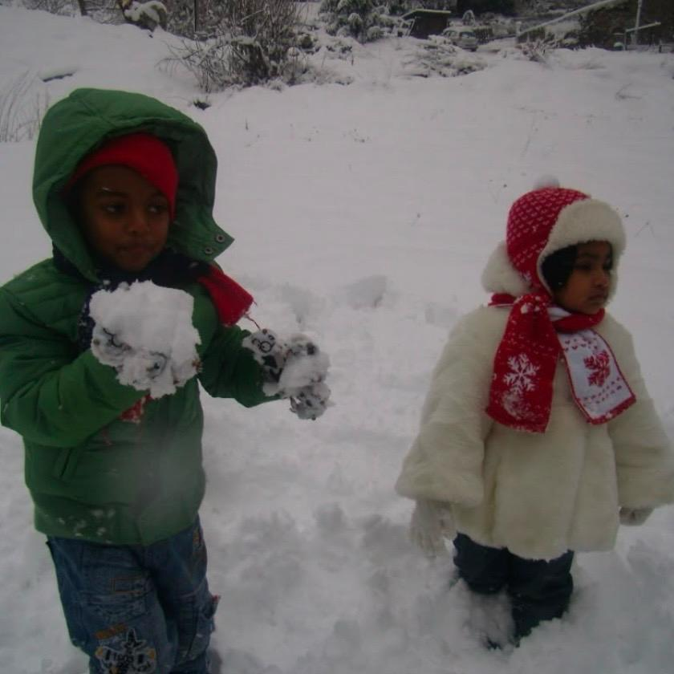
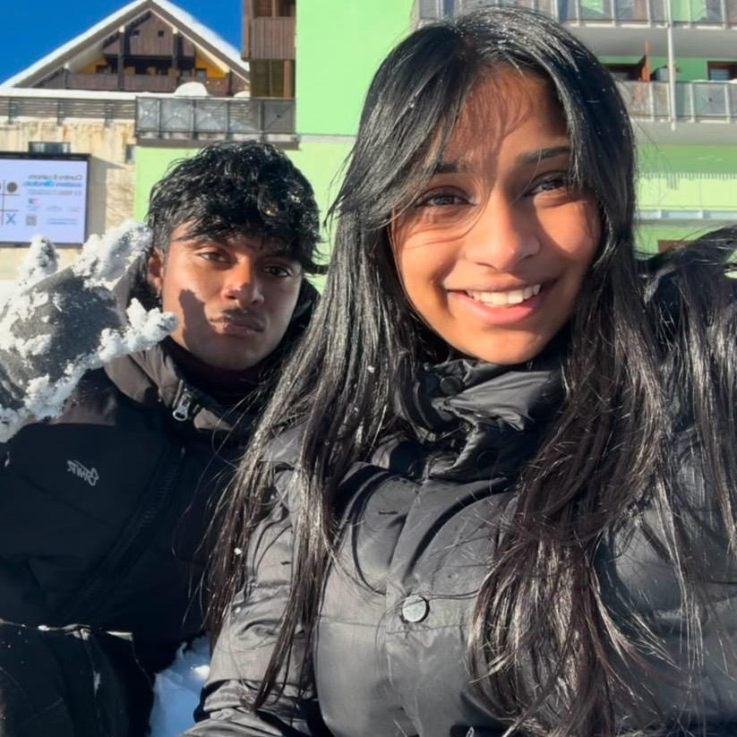
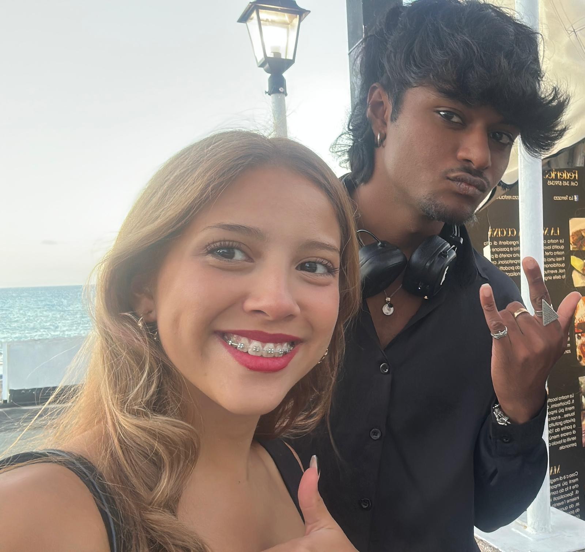

Quando in terza media mi è stata data la responsabilità di scegliere il mio successivo percorso di 5 anni ero molto confuso, non sapevo ancora le cose che ora so, quindi le mie passioni, i miei obiettivi e le mie aspirazioni.
L'unica materia che sapevo che mi avrebbe interessata era l'informatica e facendo le mie ricerche scoprì che il Montale offriva un corso tecnico, che poteva poi diventare nel triennio un corso improntato verso l'informatica.
Scelsi quindi questa scuola.
Se adesso tornassi indietro nel tempo sicuramente non avrei scelto questo percorso, ma un liceo artistico, dato che sarebbe stato piu indirizzato verso le mie aspirazioni future.
Questo mio percorso di 5 anni è iniziato dopo che purtroppo ho perso un anno (al primo anno) durante la pandemia del covid-19.
Questo evento mi ha portato a riflettere molto sull'importanza della costanza e dell'impegno di cui c'è bisogno per affrontare un nuovo percorso, molto diverso da quello precedente, quindi della scuola media
Ritrovarmi per la seconda volta subito dopo un anno in una nuova classe non è stato troppo difficile da sostenere per me, anzi onestamente ammetto che mi trovavo molto meglio rispetto alla classe precedente. Non era assolutamente per colpa dei miei vecchi compagni, solo che successivamente trovai piu persone con cui feci amicizia, con cui sono molto legato ancora adesso.
Durante questi anni ho legato molto con 2 mie compagne in particolare: la Kenisha e la Valeria.
| E' stata una grandissima coincidenza il fatto che io e la Kenisha siamo capitati in classe insieme, dato che noi ci conoscevamo gia da quando eravamo bambini, di conseguenza al fatto che i nostri genitori sono amici da molti anni. Nonostante ci conoscessimo già non legammo subito al primo anno, ma comunque eravamo nello stesso gruppo, abbiamo invece iniziato veramente a conoscerci fra il secondo e il terzo anno. |  |
| Kenisha è stata una influenza positiva per me per quanto riguarda lo studio. Infatti lei è una persona che si impegna moltissimo a scuola, punta sempre al massimo e fa di tutto per raggiungerlo. Invece io sono sempre stato una persona che si accontenta del minimo e a cui va piu che bene la sufficienza, nello sviluppo della nostra amicizia io sono cambiato molto grazie a lei, ho iniziato anche io a puntare al massimo e in alcuni casi sono anche riuscito a migliorare le mie prestazioni scolastiche. |  |
| La valeria l'ho conosciuta sempre in al primo anno, e ho iniziato a legarci soprattutto durante il secondo anno, dato che comunque siamo capitati nella stessa cerchia di amici. Di conseguenza quando io lei e Kenisha siamo capitati insieme nel corso SIA, abbiamo sviluppato davvero un bel rapporto. Diciamo che noi 3 eravamo praticamente sempre insieme. | |
| Lei invece è stata per me una buona influenza da un punto di vista piu personale. Lei è una persona che ha sempre una chiara idea in merito ad un qualsiasi tipo di dibattito o discussione, e quando magari parliamo di cose un po piu serie usa sempre un linguaggio anche un po ricercato, utilizzando sempre le parole giuste. Vedere questo lato della sua personalità mi ha spinto a voler anche io avere sempre le parole giuste e soprattutto a sviluppare sempre una mia idea in merito a certi argomenti, senza pensare a cosa penserebbero le altre persone. |  |
Nonostante la scelta di questa scuola non sia molto coerente con ciò che voglio fare nel futuro, non mi pento assolutamente di aver scelto questo tipo di corso, dato che ho acquisito delle conoscenze e delle competenze che sicuramente mi aiuteranno nella mia vita, e già mi hanno aiutato.
Di sicuro la materia che mi ha interessato di più è stata l'informatica, anche perchè ho scelto questo corso per questa materia. Studiare la programmazione mi ha affascinato molto e poter imparare molto di piu sul funzionamento di un computer è stato molto interessante.
Un argomento che mi ha aiutato molto per quanto riguarda la mia vita personale è stato un argomento che abbiamo approfondito nell'educazione civica: la sicurezza informatica.
Soprattutto argomenti come:
Un'altra materia che è stata molto formativa e importante per la mia vita è stata: il diritto
Infatti è stato molto importante per me studiare argomenti come il funzionamento degli organi dello stato e di come il cittadino ha il potere nel nostro stato mi ha fatto capire che noi possiamo effettivamente cambiare le cose e che non possiamo limitarci a credere che le persone che sono al potere siano l'uniche capaci di fare qualcosa.
La materia che è stata la piu importante, dato che avremmo avuto l'esame su quella, è economia aziendale, e nonostante fosse stato difficile per me affrontare alcuni argomenti, ho avuto due professoresse che mi hanno aiutato molto a comprenderle.
Infatti ho imparato molto e credo che molte cose che ho fatto sia durante il biennio che durante il biennio mi aiuteranno in futuro.
La fine di questo percorso mi spaventa un po', sapere che da qui in poi sarò completamente responsabile rispetto alle scelte per il mio futuro solleva un grande peso in me.
Nonostante ciò sono comunque felice, so che tornerà la nostalgia della scuola, dopo comunque 13 anni dello stesso tipo di routine sarà difficile ambientarsi a quella dell'accademia, ma non vedo davvero l'ora